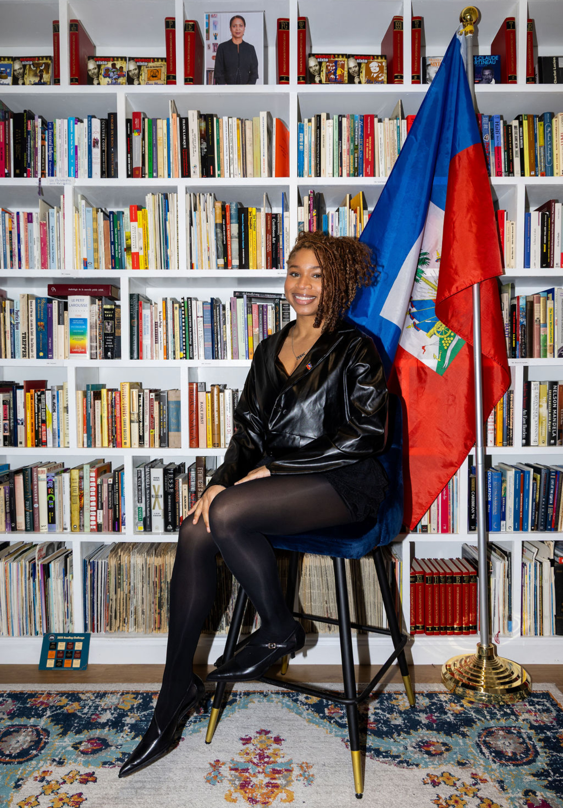

Hi! I’m Saan Similien, a fourth-year at Northeastern University double-majoring in Data Science and Environmental Sustainability Sciences. I like using data to solve real-world problems, especially ones tied to the environment and accessibility.
I recently finished my co-op as a Digital Accessibility Coordinator with Khoury College’s ADA Compliance Committee, where I audited software and files against WCAG and wrote up VPATs. I’m back on campus taking classes like Machine Learning and Biostatistics, and I build projects in Python. I’m looking for an internship for summer 2027, and I’m available starting in May.
Outside of school, I’m the Event Coordinator for Haitian Student Unity. I love bringing people together and making events that mean something to our community. In my free time I like trying new recipes for my friends and family and watching new TV shows.
Email: similien.s@northeastern.edu